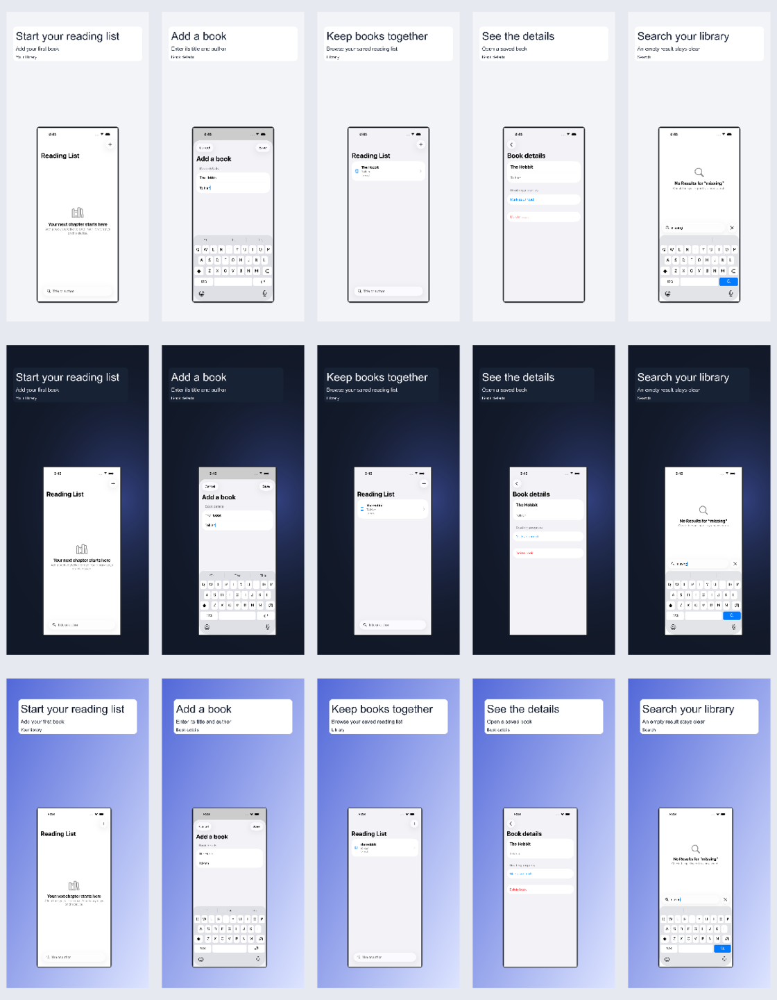
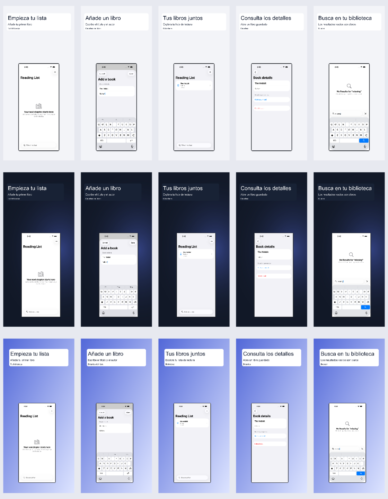

minimal
Centered headline and a generous single device.
Turn simulator captures into polished App Store screenshot sets.
Included in npm 2.8.0. Your images stay local.
Choose a layout, supply factual copy, compare variants and export PNGs after validation and a visual review. Keep using the existing simulator tools or your UI-test capture workflow.
Five Reading List simulator states rendered in minimal, dark-premium and gradient layouts. Each row is a variant; screen order is preserved. These are marketing compositions of existing captures.


Rendering hashes and validation record · Reproduce this example
npm ci --prefix mcp-server
npm run build --prefix mcp-server
node mcp-server/dist/unified.js screenshots variants --config recipe.json --output ./new-set
node mcp-server/dist/unified.js screenshots inspect --set ./new-set
node mcp-server/dist/unified.js screenshots export --set ./new-set --output ./exportFor MCP, connect your client to ios-agent-mcp@latest. Ask it to use list_screenshot_templates, then generate_screenshot_variants with your captures and copy. Recipe, MCP tools and CLI reference →
Centered headline and a generous single device.
Dark field, offset typography and floating neutral frame.
Color gradient, inset headline panel and feature badge.
Side-by-side text and screenshot composition.
Layered paper card with contained screenshot.
Large contained screenshot with an opaque safe text panel.
Two explicitly supplied screenshots with equal visual weight.
Two or three supplied screenshots in individual neutral frames.
Pixel profiles checked 2026-09-29 against Apple’s screenshot specifications. Recheck requirements for your app before submission. Passing checks is not Apple approval.
Neutral frames are programmatic, not official Apple artwork. Original proportions stay intact. Text panels sit outside app UI. Existing catalog colors can inspire the accent; source assets are never modified.
Translation is supplied, not performed online. Font coverage and overflow must pass. RTL layouts support single-direction copy; mixed-direction text is rejected. Human review is still needed for app content, claims and typography. Local manifests contain source paths—review them before sharing.